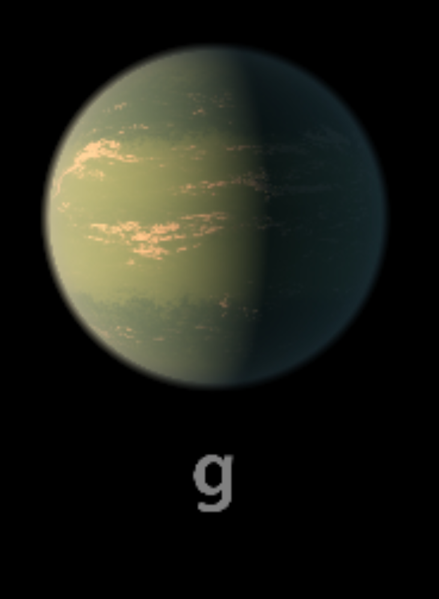

TRAPPIST-1 g

TRAPPIST-1 g es el sexto planeta del sistema. Es uno de los planetas exteriores y tiene un tamaño parecido al de la Tierra.
Características
- Tipo: planeta rocoso.
- Periodo orbital: aproximadamente 12.35 días terrestres.
- Se encuentra en la zona habitable estimada.
- Recibe menos energía que los planetas interiores.
Dato interesante
Su año dura más de doce días terrestres, mucho más que el de los planetas b, c y d.
¿Podría tener vida?
Su posición podría permitir temperaturas compatibles con agua líquida bajo ciertas condiciones atmosféricas. No existe evidencia confirmada de vida.
Planeta anterior Todos los planetas Siguiente planeta